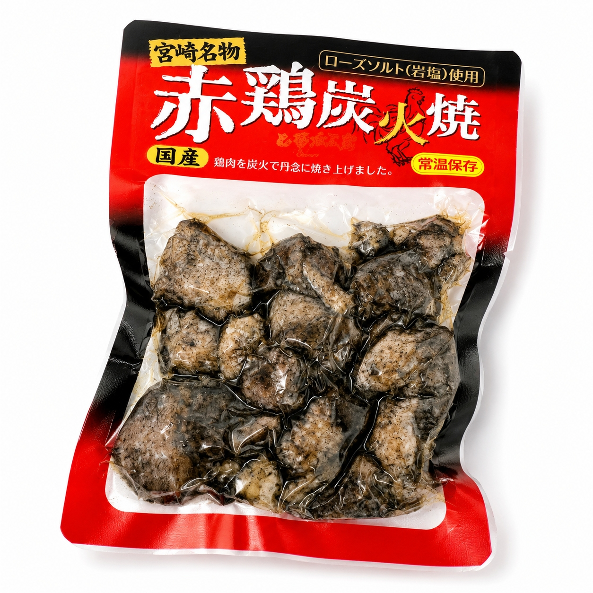
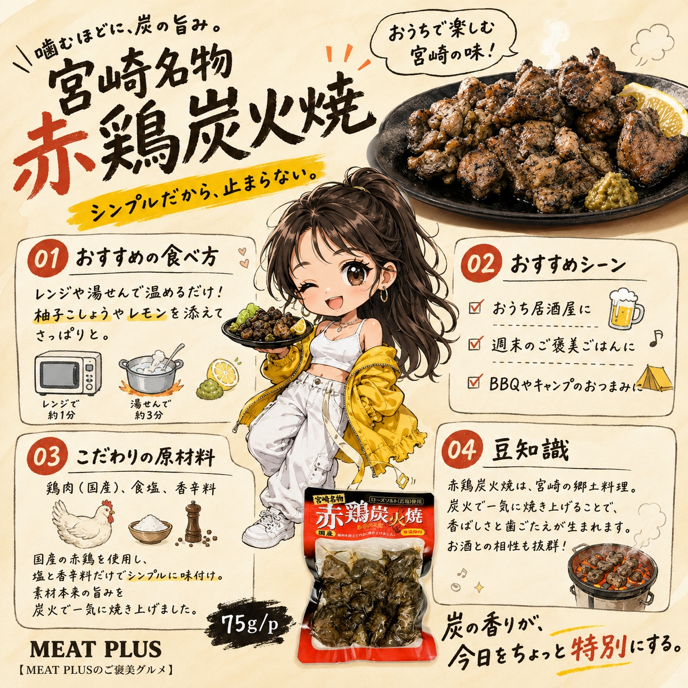

SCENE 01
I020

i 惣菜・加工品
赤鶏炭火焼
【炭火の香りと鶏の旨味。本場宮崎の味を食卓へ。】
- 内容量75ｇ/ｐ
- 保存常温
- 産地日本
商品の特徴を読む
今夜の晩酌は、ちょっと特別な一品を加えてみませんか。袋を開ければ、炭火でじっくりと焼き上げた香ばしい香りがふわりと広がります。ご紹介するのは、本場宮崎の味わいをご家庭で手軽に楽しめる「赤鶏炭火焼」です。厳選した国産の赤鶏を、職人が丹念に炭火で焼き上げ、鶏肉本来の旨味と歯ごたえを最大限に引き出しました。味付けはシンプルながらも奥深い、まろやかなローズソルト（岩塩）と香辛料のみ。余計なものは加えず、素材の良さをストレートに味わっていただけます。常温で保存でき、賞味期限も発送日から3ヶ月と長いので、いつでも好きな時にお召し上がりいただけます。湯煎で温めるだけで、まるで焼きたてのようなジューシーさが蘇ります。ビールや焼酎のお供にはもちろん、ご飯の上にのせて丼にしたり、柚子胡椒やネギを添えたりとアレンジも自由自在。今日の食卓に、本格的な炭火焼をプラスして、心満たされるひとときをお過ごしください。
公式サイトへ移動します。価格・在庫・配送条件は移動先で最終確認してください。

SCENE 02
【炭火の香りと鶏の旨味。本場宮崎の味を食卓へ。】
SCENE 03
【炭火の香りと鶏の旨味。本場宮崎の味を食卓へ。】
PRODUCT INFORMATION
購入前に確認したい商品情報
- 商品名
- 赤鶏炭火焼
- 商品規格
- 75ｇ/ｐ
- 保存方法
- 常温
- 原産国
- 日本
- 製造地
- 日本
- 賞味期限
- 発送日より3ヶ月
原材料
鶏肉（国産）、食塩、香辛料
FAQ
購入前のよくあるご質問
温めずにそのままでも食べられますか？
はい、加熱調理済みですのでそのままでもお召し上がりいただけます。温めていただくと、より一層炭火の香りが引き立ち、鶏の脂が溶けてジューシーな食感をお楽しみいただけますのでおすすめです。
赤鶏とはどんな鶏ですか？
赤鶏は、一般的な若鶏に比べて飼育期間が長く、運動量も多いため、肉質がしっかりとしていて歯ごたえがあり、鶏本来の豊かな旨味を味わえるのが特徴です。
MEAT PLUS OFFICIAL SHOP
【炭火の香りと鶏の旨味。本場宮崎の味を食卓へ。】
仕入れ・加工・梱包・発送まで自社で行うMEAT PLUSの公式オンラインショップでご注文いただけます。
公式オンラインショップで購入する